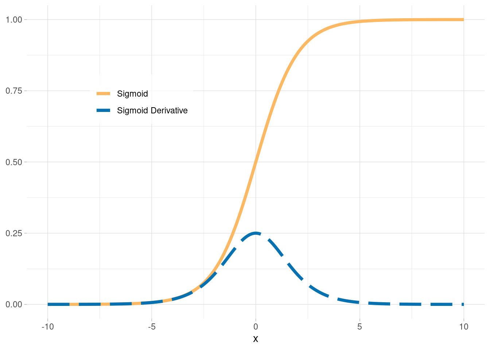
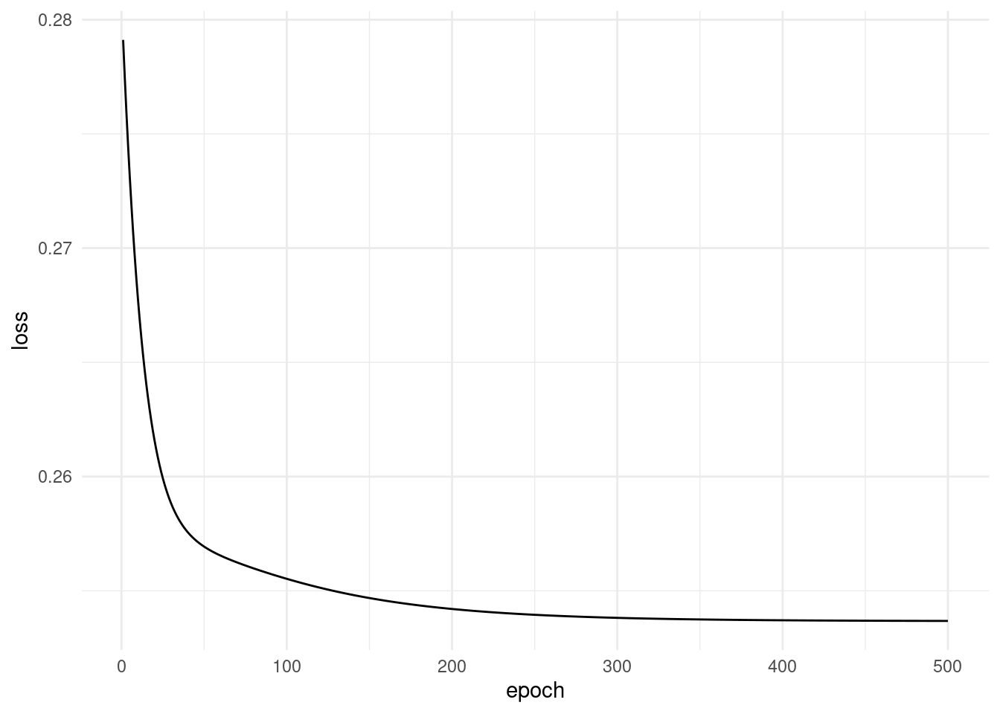

set.seed(2023)
X <- matrix(c(0, 0, 0, 1, 1, 0, 1, 1), ncol = 2, byrow = TRUE) # XOR 연산의 입력값
y <- matrix(c(0, 1, 1, 0), ncol = 1) # XOR 연산의 출력값Backpropagtion with R
R
Basics of Deep learning
Backpropagation (역전파)
Backpropagation은 Artificial Neural Network를 학습시키기 위한 일반적인 알고리즘 중 하나이다.
한국말로 직역하면 역전파라는 뜻인데,
target값과 실제 모델이 계산한 output이 얼마나 차이가 나는지 구한 후, 그 오차값을 다시 뒤로 전파해가면서, 각 뉴런이 가지고 있는 변수들을 갱신하는 알고리즘인 것이다.
간단한 데이터로 살펴보는 Backpropagation 예시 및 실습
필요 함수 정의
- 시그모이드
sigmoid <- function(x){
1/(1+exp(-x))
}- 시그모이드 도함수(기울기)
sigmoid_derivative <- function(x){
sigmoid(x)*(1-sigmoid(x))
}- mse 함수
mse_loss <- function(y_true,y_pred){
((y_true - y_pred)**2) %>% mean()
}
체인룰(chain rule)은 미적분학에서 사용되는 중요한 개념 중 하나로, 함수의 미분을 연쇄적으로 계산할 때 도움을 주는 규칙입니다.
딥러닝에서도 backpropagation (역전파) 알고리즘을 이해하고 구현하는 데 필수적인 개념 중 하나입니다.
체인룰은 다음과 같이 표현됩니다. 두 개의 함수 f(x)와 g(x)가 있을 때, f(g(x))의 도함수(미분)를 계산할 때 사용됩니다.
(d/dx)[f(g(x))] = (df/dg) * (dg/dx)
여기서 각 항목의 의미는 다음과 같습니다:
(d/dx)는 x에 대한 미분을 의미합니다.f(g(x))는 함수 f를 함수 g의 출력에 적용한 것을 나타냅니다.(df/dg)는 함수 f를 함수 g의 출력에 대해서 미분한 것을 나타냅니다.(dg/dx)는 함수 g를 x에 대해서 미분한 것을 나타냅니다.
이 규칙을 사용하여 복잡한 함수를 구성하는 동안 각 함수의 미분 값을 계산하고, 그 값을 이용하여 전체 함수의 미분을 계산할 수 있습니다.
이러한 체인룰은 신경망에서 각 층의 미분을 효과적으로 계산하는 데 사용되며, 역전파 알고리즘의 핵심 구성 요소 중 하나입니다.
딥러닝에서는 체인룰을 통해 모델을 훈련시키고, 가중치 및 편향을 업데이트하는 데 사용됩니다.
모델 구조
1-레이어이고, input 변수가 2개인 신경망을 사용해서 backpropagation을 구현해봅시다.
히든레이어의 뉴런의 수는 2개 입니다.
Backward Pass
\[ \frac{\partial L}{\partial a_1} = (a_1 - y) \] \[ \frac{\partial L}{\partial z_1} = \frac{\partial L}{\partial a_1} \times \sigma'(a_1) \] \[ \frac{\partial L}{\partial W_1} = X^T \frac{\partial L}{\partial z_1} \] \[ \frac{\partial L}{\partial b_1} = \sum \frac{\partial L}{\partial z_1} \]
Weight Update:
\[ W_1 = W_1 - \text{learning\_rate} \times \frac{\partial L}{\partial W_1} \] \[ b_1 = b_1 - \text{learning\_rate} \times \frac{\partial L}{\partial b_1} \]
input_size <- 2
output_size <- 1
W1 <- matrix(rnorm(input_size * output_size), nrow = input_size, ncol = output_size)
b1 <- matrix(0, nrow = 4, ncol = output_size)
learning_rate = 0.1
epochs = 500
# 초기화
loss_2 <- numeric() # 빈 벡터로 손실을 저장
# 학습 시작
for (epoch in 1:epochs) {
# Forward Pass
z1 <- X %*% W1 + b1
a1 <- sigmoid(z1)
# 손실 계산
loss <- mse_loss(y, a1)
# Backward Pass
da1 <- a1 - y
dz1 <- da1 * sigmoid_derivative(a1) # Sigmoid 함수의 미분
dW1 <- t(X) %*% dz1
db1 <- sum(dW1)
# 가중치 업데이트
W1 <- W1 - learning_rate * dW1
b1 <- b1 - learning_rate * db1
loss_2 <- c(loss_2, loss)
}Output & Plot
Predicted Output:
[,1]
[1,] 0.6099791
[2,] 0.5299729
[3,] 0.5386502
[4,] 0.4570364Loss plot:
loss_data <- data.frame(epoch = 1:length(loss_2), loss = loss_2)
ggplot(data = loss_data, aes(x = epoch, y = loss)) +
geom_line() +
labs(x = "epoch", y = "loss") +
theme_minimal()